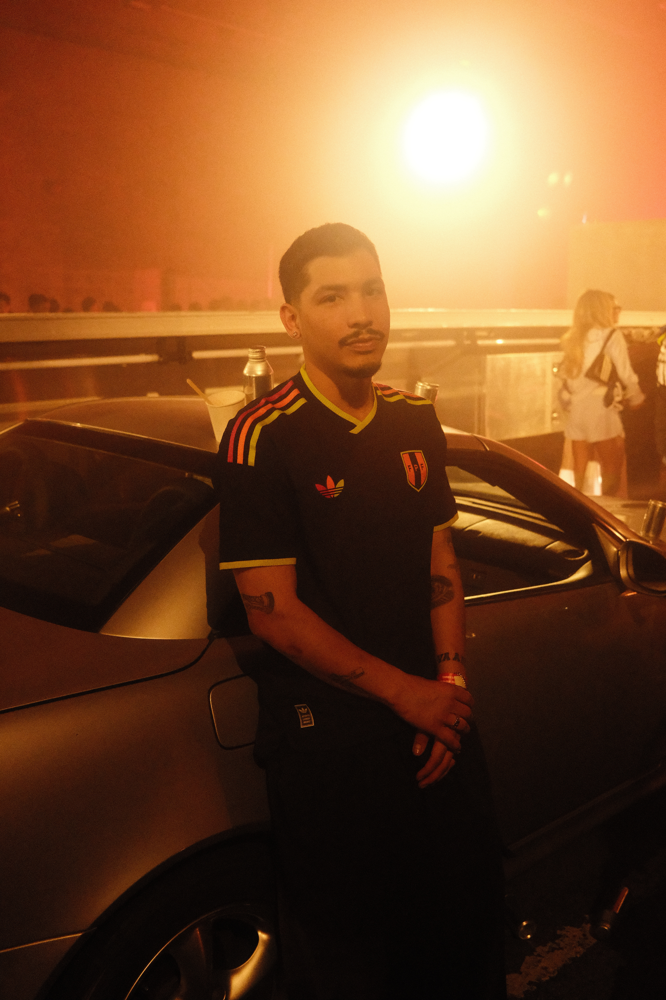

ADIDAS STORIES
Descubre qué es el blokecore, la tendencia que mezcla camisetas de fútbol con moda urbana. Te cuento cómo se vive en Los Ángeles y por qué ya está llegando a Lima.
“Sin fútbol no existiría Adidas.”
Desde Los Ángeles, el fútbol también inspira nuevas formas de expresión. Las camisetas de los equipos han dejado de usarse únicamente para los partidos y se han convertido en una pieza importante de la moda urbana.
Esta tendencia, conocida como blokecore, une la cultura futbolística con el estilo callejero. Las camisetas aparecen en conjuntos cotidianos, conciertos y distintos espacios culturales. Una estética que sigue creciendo y que también comienza a sentirse en Lima.
|
 |

|
El blokecore es una tendencia que combina el fútbol con la moda urbana. Su propuesta consiste en incorporar camisetas de fútbol y prendas inspiradas en equipos clásicos a los conjuntos que se usan en el día a día.
En Perú, las camisetas de fútbol suelen relacionarse con los partidos, los estadios y las fechas importantes para los hinchas. En Los Ángeles, estas prendas también forman parte de los conjuntos cotidianos y del estilo personal.
Aunque cada lugar vive el fútbol a su manera, ambos muestran cómo una camiseta puede representar mucho más que un equipo: también puede expresar identidad y cultura.
Adidas Originals Football conecta la cultura del fútbol con la moda urbana mediante camisetas, siluetas clásicas y elementos característicos de la marca, como las tres franjas.
Esta combinación permite que las prendas inspiradas en el fútbol se integren al estilo cotidiano, manteniendo presente la historia deportiva y su influencia en la cultura contemporánea.